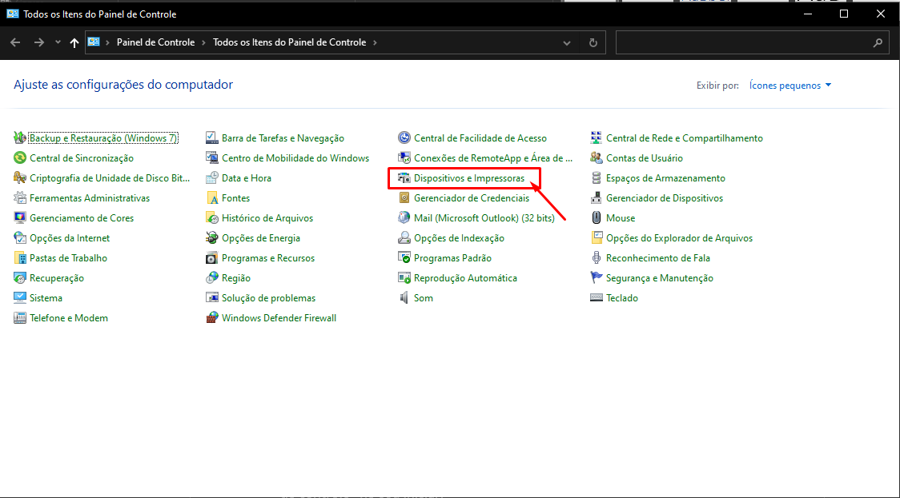

Seja bem vindo ao TI
-
1º Passo: Buscando driver.
Para configurar as impressoras saiba quais tem no Grupo, olhando na planilha de “Equipamentos de TI” Vamos lá!
Primeiramente, veja qual a impressora vai ser configurada, aqui vou demostrar da “Brother 5652” a mais comum dentro do Grupo. Todas são da mesma forma, o que diferencia é driver usado.
Nota: A Brother 5652 e Brother 5602 usam o mesmo driver.
No C: da máquina tem a pasta “TI”, onde temos alguns softwares utilizados no Grupo. Caso não encontre.
Acesse a seguinte pagina, Clique aqui e pesquise o modelo da impressora que deseja o driver.
- Agora buscando pelo C: “C:\TI”
-
2º Passo: Executando driver
Agora na parta “TI” encontre o driver da Brother 5652 e execute, clicando duas vezes. Se você fez o download do driver pela pagina da Brother, verifique os “Downloads”.
- Após isso, vai aparecer o “Controle de Usuário”, clique em “SIM”.
-
3º Passo: Iniciando a instalação.
Abrira na sua tela, a seguinte janela, onde você fará as configurações da impressora.
- Verifique o idioma, e clique em “Avançar”
-
4º passo: Iniciando a configuração da impressora.
Após avançar, você poderá ver o Contrato de licença da Brother. Aceite para prosseguir, e clique em “Avançar”.
-
4º Passo: Selecionando a conexão.
Para configurar a impressora você precisa estar conectado na mesma rede que ela. Em sua totalidade as impressoras estão conectadas na rede.
Então fica mais simples de outros colaboradores também usar a impressora. Agora, vamos selecionar a opção “Conexão de rede a cabo (Ethernet)” Nota: Existem impressoras que são possíveis sua conexão via Wi-Fi, porém recomendamos a configuração via cabo de rede, para que não tenha conflito de IP, por causa do DHCP. Só utilize em ultimo caso.

-
Feito Isso, Clique em “Avançar”.
Vai pedir para conectar a impressora a rede, se já estive, só clicar em “Avançar”.
-
5º Passo: Seleção da impressora.
Agora vamos selecionar a impressora. Tem duas formas de identificar a impressora. Pelo “Nome de Nó”, e pelo “IP”, ambas as informações você consegue na própria impressora. *Caso dúvida, consulte site da Brother.
Com as informações em mãos. Selecione a impressora correta
-
Feito isso, clique em “Avançar”.
Na próxima etapa, selecione o tipo de instalação que deseja. Utilize a instalação padrão. É mais recomendado.
- Feito Isso, clique em “Avançar”. Pronto, a instalação vai iniciar.
-
Pronto, a instalação vai finalizar e esta pronta.
Para seguir um passo a passo visual acesse o link: Clique aqui
6º Passo: Outro modo de instalação. Existe outro modo de instalação? Sim, mas pode ocorrer erros. Vou demonstrar como faz. Pressione em seu teclado “Win+R” e digite “control” Ou pesquise “Painel de controle” no seu iniciar.
- Após isso, vai abrir o “Painel de controle”, procure “Dispositivos e Impressoras”, clique para abrir.
- Após abrirá os dispositivos e impressoras conectadas. Vá em “Adicionar uma Impressora”

- Iniciará a busca pelas impressoras conectadas na rede.
- Se encontrou, clique duas vezes, iniciará a instalação.
- 7º Passo: Caso não encontre a impressora na lista... Caso não encontre a impressora que deseja, clique em “A impressora que eu quero não está na lista”.
- Abrirá uma tela, onde existem outros modos para encontrar a impressora, caso saiba usar outro além do que vou apresentar, sinta-se à vontade. Selecione “Adicionar uma impressora usando o endereço TCP/IP ou nome de host”.
- Após, Insira as informações solicitadas, recomendo pelo endereço IP.
-
Agora só “Avançar”, vai realizar a busca de driver e adição da impressora. Acontece de adicionar um driver genérico, então fique atento.
Esse modo de adicionar impressora, pode dar erro. Então por fim, impressora adicionada.